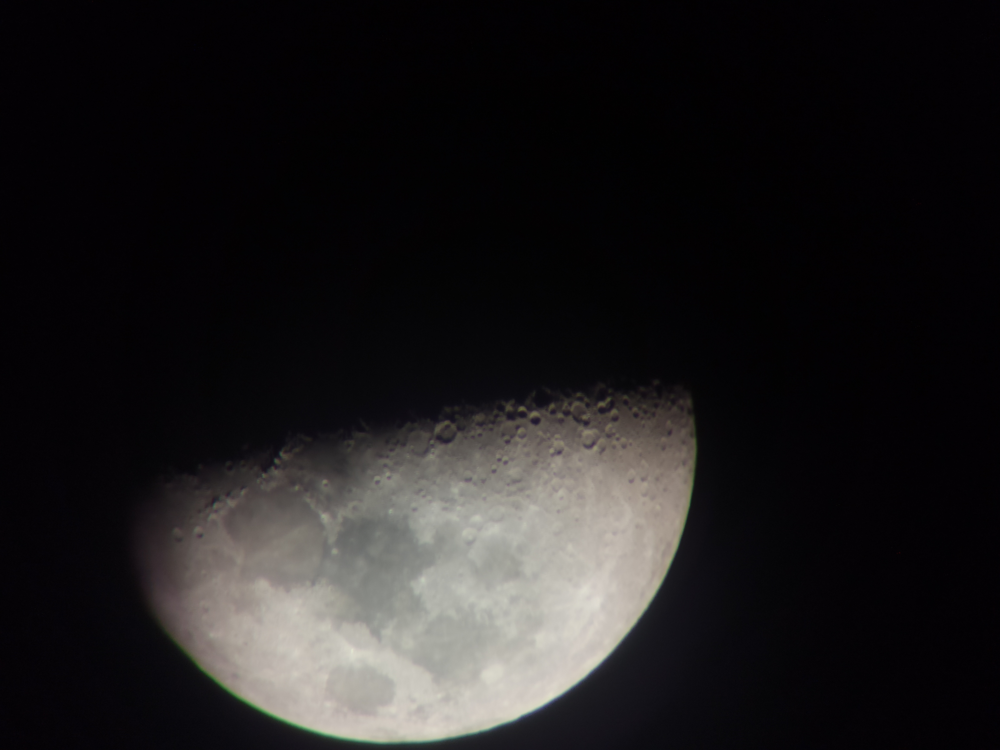
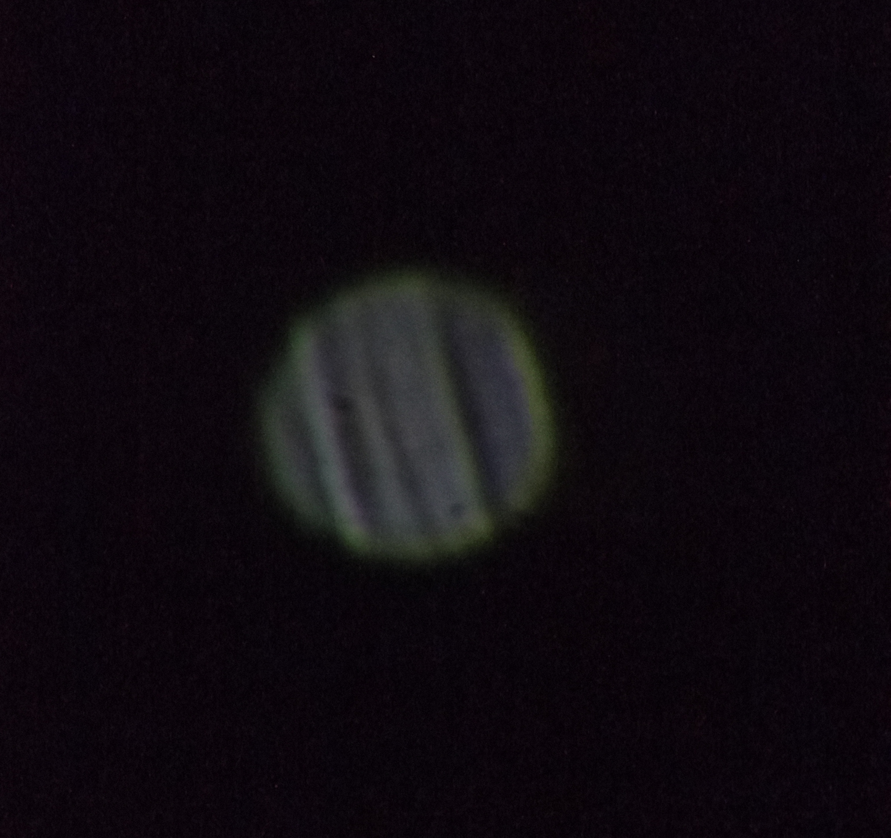
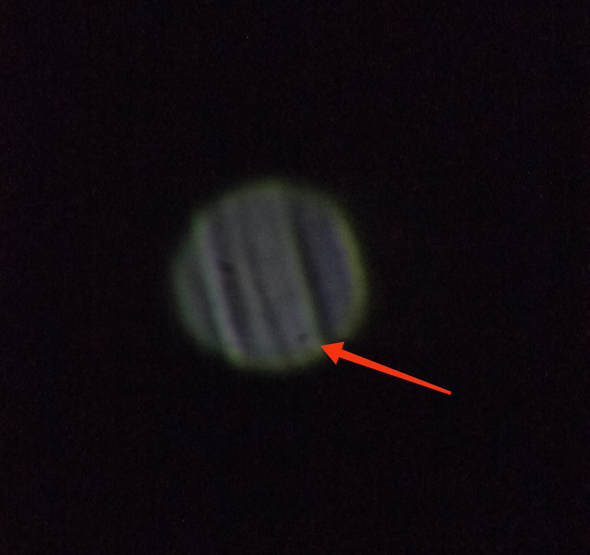
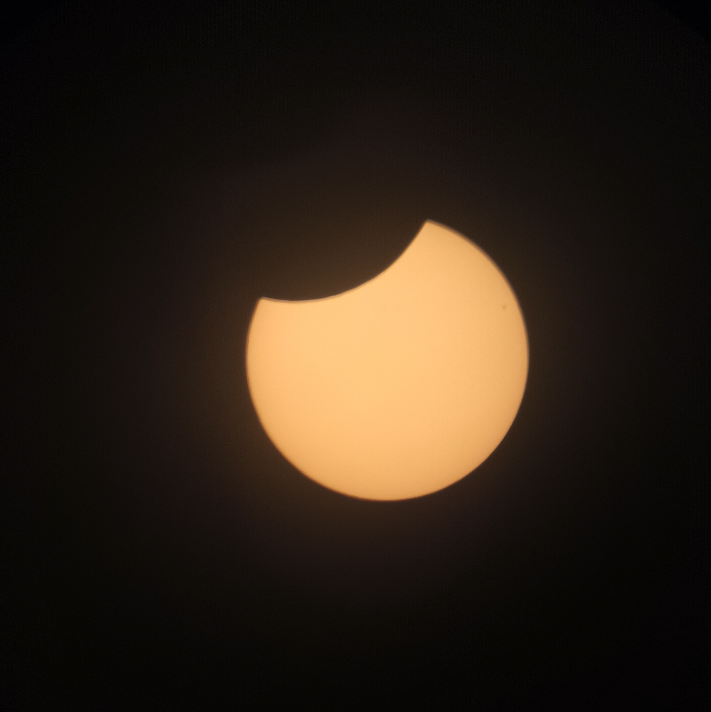
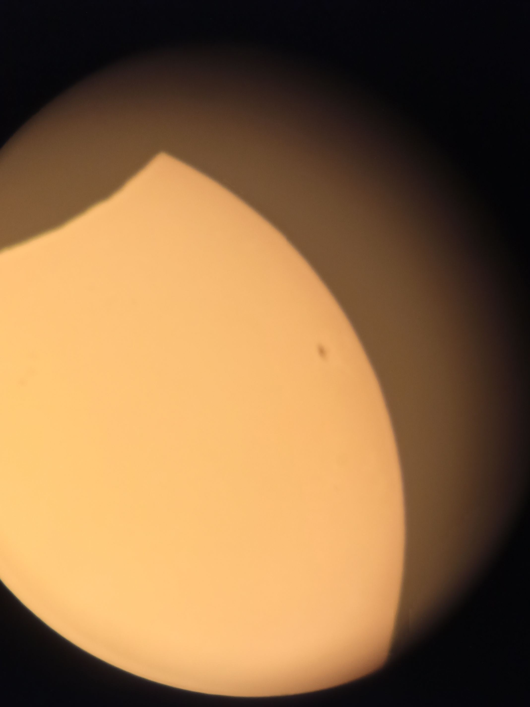

Galeria Astronomiczna
O moim sprzęcie:
Teleskop Bresser 80/640,
Okulary BRESSER SUPER PLOSSL: 26mm (25x),10mm (65x), 6mm (100x),4mm (160x)
Telefon Redmi Note 8 Pro z kamerą 64 MP,
filtr Słoneczny
Księżyc- Jedyny naturalny satelita Ziemi. Widoczny gołym okiem

Jowisz- To piąta z kolei planeta posiadająca łącznie 95 księżyców. Zauważalna gołym okiem.
Na zdjęciach widać małą kropeczkę w dolnej części- to Europa


Zaćmienie Słoneczne- Bardzo rzadkie zjawisko, występuje gdy między Słońcem a Ziemią ustawi się Księżyc.
Niestety w Polsce zaćmienie nie było całkowite, lecz to i tak wspaniałe zjawisko.
Widoczne gołym okiem ale tylko raz :)


Powrót